FC2無料ホームページの作り方
FC2無料ホームページの作り方も、当サイトのサンプルテンプレートで作成すれば、初心者でも簡単に作ることができてしまうんです。
初心者簡単な無料ＨＰの作り方のところで書いているのは、主にヤフージオシティーズでの作成手順ですが、同じテンプレートを使用して、FC2の無料ホームページでも作成することができます。
【追記：】
こちらのページのテンプレートにつきましては、 訪問者様から以下のようなご指摘をいただきました。
>ファイルマネージャーで作成したファイルが一定時間で消されてしまいます。
こちらはおそらく、書き換えをする際にheadタグ内の情報が削除されてしまうためと思われます。
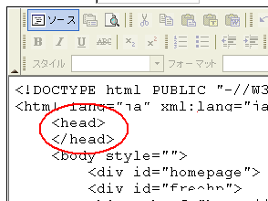
FC2のファイルマネージャーについては、公式サイトにて、以下のような記載があります。
>はじめてホームページを作られる方を対象に、
>ブラウザ上で簡単なホームページ制作ができるよう、設計されたものです。
ブラウザで簡単に作れるように設計されている仕様のようですので、このページでご紹介しているhtmlタグを直接記入する方法はあまりおすすめできません。できるだけ、有料のレンタルサーバーをご利用されることをおすすめします。
もし、当サイトのテンプレートをfc2で利用されるのであれば、headタグの中身をその都度書き加える形で作成すると通常どうりに表示されるかと思います。一度保存したあと、まったく手を加えなければ、一定時間で変更されないはずです。
FC2のマニュアルを参考にすれば、普通に作成できるかと思いますので、このページでご紹介している方法につきましては、あくまでひとつの方法としてご参考いただければと思います。
FC2無料ホームページの作り方の簡単手順
FC2無料ホームページの作り方の手順ですが、今、実際に作成してみたところ、だいたい20分ぐらいでトップページまでを作成することができましたので、割と簡単なのではないかなと思います。
ただ、保存ボタンを押した際、時々処理に失敗することが多いようです。
作成したページを保存する前に、ちょくちょくメモ帳などにコピペしておくことをおすすめします。
無料メールアドレスを用意する。
まず、fc2無料ホームページを作成する際に必要となるものはメールアドレスぐらいですが、メルアドを持ってない場合はヤフーやグーグルで取得しておきましょう。
（無料メールアドレスの作り方参照。）
FC2WEBで無料ホームページを申請する。
取得したメールアドレスをもとに、FC2WEBで無料ホームページを申し込みます。
FC2のサブドメインを取得する。
ホームページURLとなるサブドメイン名を考えて、取得できるかどうかをチェックします。同時に無料ホームページのタイトルや説明文などを入力します。
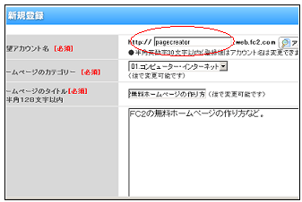
FC2ホームページのCSSファイルを作成する。
次に、「ファイルマネージャー」へと移動し、作成するホームページの見た目の部分を指定するCSSファイルを新規に作成します。
まず、デフォルトの黄色いフォルダと index.html ファイルは全て削除して何もない状態にしてください。
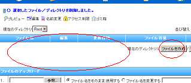
次に「ファイルを作成ボタン」を押して、
ファイル名を「index.css」として作成します。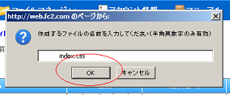
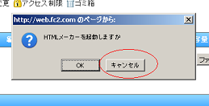
ファイル名を入力して「ＯＫ」とした後、「ＨＴＭＬメーカーを起動しますか？」と聞かれますが、キャンセルを押すとソースの入力欄が出て来るので、次のサンプルCSSをコピペで貼り付けます。
文字コードは「 EUC-JP 」で保存してください。
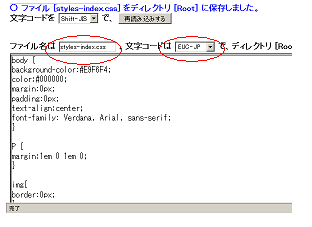
保存ボタンを押して終了です。
ボタンを押した際、自動的に「 Shift_JIS 」で保存されるかもしれませんが、index.css がルートディレクトリに作成されさえすればＯＫです。
「メニュー - ファイルマネージャー」をクリックして確認してみてください。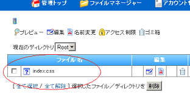
これでホームページのみための部分を指定するCSSファイルが出来上がりました。
トップページのhtmlファイルを作成する。
同じように「ファイルを作成する」ボタンを押して、ファイル名を「index.html」として、こちらのサンプルhtmlソースを使って作成します。
上の index.html ファイルのソースをコピペで貼り付けるだけですが、FC2の管理画面でも「ソース」ボタンを押した後、デフォルトで存在する html ソースに上書きコピペしてください。
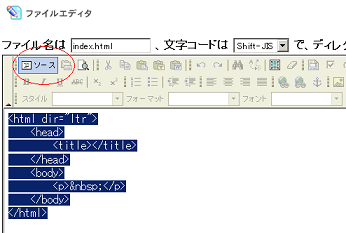
文字コードを「 EUC-JP 」で保存して完成です。
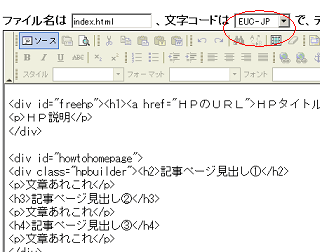
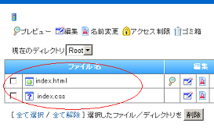
とりあえず、このふたつのファイルがあればあなたのホームページが表示されます。
URLを表示して確認する。
あなたのサブドメインにアクセスしてみて、きちんとホームページが表示されているかどうか見てみましょう。
「登録情報の確認ページ」にあなたの無料ホームページのURLが記載されています。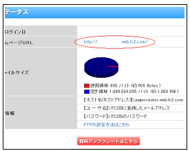
たぶん、こんな感じになっていると思います。

下の部分はFC2の広告？部分ですが、ここは自動的に挿入されるようです。
※上記の画像は以前の古いテンプレートですので、こちらのように表示されます。
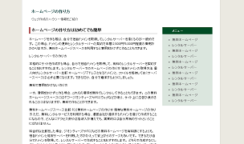
もし、こんなんなってたら保存する文字コードが合ってないはずです。
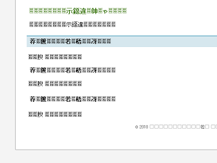
文字化けしていたり、きちんと表示されていない場合は、デフォルトの html ソースが残っていてきちんと上書きされていないか、html ファイルの文字コードが「 EUC-JP 」で保存されていないはずですので確認してみてください。
ちなみに、スタイルシートの文字コードは日本語が書いていないので、何でもいいかと思います。
index.htmlファイルを元に記事ページを作成。
あとは、タイトルやページの本文を入力したり、作成した index.html ページを元に新しいページを追加してみたり、デザインをカスタマイズすれば完成です。
文章を記入する際は、「ソース」ボタンを押して対応箇所を直接編集します。
Pタグ内にある「文章あれこれ」の部分を削除し、そこに新しく文章を記入して保存すると実際のホームページにもそれが反映されます。
→ 段落と改行のhtmlタグタイトルの部分をトップページへつなげたり、他のページへのリンクを作成する際は、リンクタグを使ってつなげるとよいでしょう。
→ ホームページのリンクタグ作り方また、FC2ホームページではこのような携帯変換のQRコードが表示されます。
QRコードがじゃまになる場合は、「携帯変換設定」で無効にするか、位置をずらすことをおすすめします。
画像や色彩、フォントやタイトルバナーなどの作り方ものせているので、ホームページ内をちらほらと参考にしてみてください。
【追記】：
HTMLとCSSのテンプレートセットは、こちらのサブドメインの方にもあります。
ホームページ・テンプレートセンター